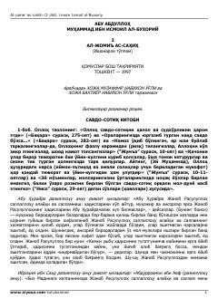

AAImom Buxoriyning «Sahih» to'plami ikkinchi jildi savdo va shariat masalalariga bag'ishlangan.
Ushbu kitob Imom Ismoil al-Buxoriyning mashhur «Al-Jome’ as-sahih» (Sahih al-Buxoriy) asarining ikkinchi jildi bo'lib, unda savdo-sotiq, halol va harom masalalari hamda shubhali ishlar haqidagi hadislar keltirilgan. Asar islom huquqi va shariat qoidalarini o'rganishda muhim birlamchi manba hisoblanadi. Tarjimonlar: Xoja Muzaffar Nabixon o'g'li va Xoja Baxtiyor Nabixon o'g'li.